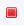
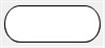
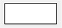
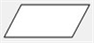
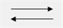
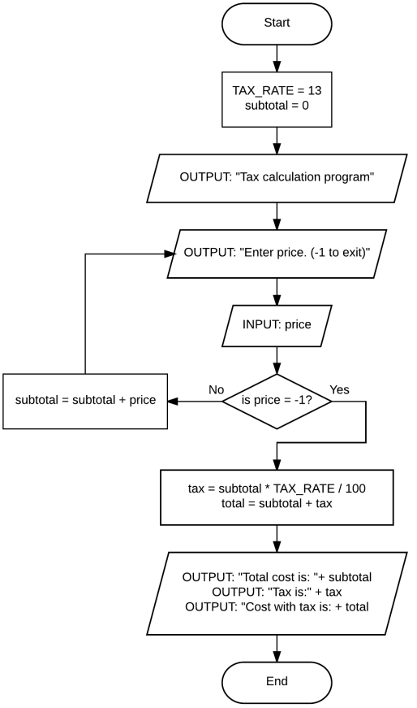

Unit 4: Programming with Python
Activity 4: Repetition and Flowcharts
Using Repetition Structures
Repetition in programming is the set of commands that allow the programmer to use code over and over. Repetition is one of the key tools programmers use to give their programs flexibility, while at the same time re-using good code and developing an overall predictability for the user. Well designed repetition can allow the programmer to save thousands of lines of code, while making programs more useful.
There are three basic kinds of repetition:
- infinite repetition
- conditional repetition
- counted repetition
All three have their uses. We will examine each type in this activity.
Infinite Repetition
Infinite repetition is a programming structure in which the program code is repeated endlessly. Programs that must always be running, operating systems, monitoring programs, or hardware drivers, for example, might be structured this way. The way to end a program in an infinite loop in Eclipse is to press the red stop button in output/console window. Infinite loops are easy to make, and are the basis of other types of repetition.
The syntax for an infinite loop in Python is as follows:
while True:
#code to be repeated
#code to be repeated
There are several things to notice about this structure. First, the command while True: is called the header. It designates the beginning of the structure. The code inside the structure is indented, which helps with code readability. Python also uses indentation to denote the start and end of all structures. The loop structure ends when the indenting ends. When the interpreter reaches the last indented line, it returns to the beginning of the repetition structure (the line after the header) and continues indefinitely.
Infinite repetition is often used in graphics animation. By making small changes to the location of a shape on the screen, we can simulate movement.
The program below shows a ball that is moving in a diagonal direction across the screen. Notice the position of the ball is stored in the variables center_x and center_y. Each frame these value are changed by a small amount.
Try running this code in Eclipse. Since the loop is infinite, you will need to stop the program using the stop button  found on the Console view.
'''
Created: Aug 2018
StaightLine.py
simple demonstration of pygame animation
@author: K. Spindler
'''
import pygame
from pygame import Color
from pygame import draw
from pygame import display
from pygame import time
#Constants & Variables
SCREEN_SIZE = (600, 400)
center_x = 50
center_y = 50
# initialize pygame modules
pygame.init()
clock = time.Clock()
# get a surface for graphics display
gameDisplay = display.set_mode(SCREEN_SIZE)
while True:
# white background
gameDisplay.fill(Color('white'))
# draw the ball
draw.circle(gameDisplay, Color('purple'), (center_x, center_y), 30)
# show the graphics on the screen
display.flip()
# get ready for next frame - move the ball down and to the right
center_x += 2
center_y += 1
#delay the program to obtain 45 frames per second
clock.tick(45)
Conditional Repetition
Conditional repetition is a repetition structure that includes a means of exiting the loop when a condition is met. This type of repetition gives the programmer an enormous amount of flexibility.
The command
while <condition>:
is used as a header for a conditional loop. The
When a condition is met, we say the condition evaluates to True, and when the condition is not met, we say the condition evaluates to False.
Python has a variable type, called bool, which is can only hold one of two possible values: True or False. So the
Comparison operators
One common way to create a
Example: Given two numeric variables, num and check, which are initialized as follows:
num = 4
check = 3
Conditional statements could be set up as follows:
|
Comparison |
Operator |
Syntax |
Result |
|
check is equal to num |
== |
check == num |
False |
|
check is not equal to num |
!= |
check != num |
True |
|
check is greater than num |
> |
check > num |
False |
|
check is less than num |
< |
check < num |
True |
|
check is greater than or equal to num |
>= |
check >= num |
False |
|
check is less than or equal to num |
<= |
check <= num |
True |
The use of a condition in a loop means that the loop will be exited when the condition evaluates to False, and that code following the loop will be executed. The following is an example of a conditional loop.
# Counting using a conditional loop
# ICS2O Unit 4, Activity 4
# Created by R. Kuzmochka
# Edited by K. Spindler
# Variables
num = 1
# Program Title
print ("This program will count up from 1 to any number.")
# Input - Getting the number to count to, newline for formatting
countTo = int(input("Please enter a number: "))
print ("")
# evaluates the value of num against countTo.
while num < countTo:
#output current num to screen
print (num)
#increases the value of num by 1 on each repetition.
num = num + 1
# Output an empty line for formatting and indicate end of program
print ("")
print ("Finished Counting")
Boolean Operators
Another way to create a condition, or to make a condition more complex, is through the use of boolean operators. Python recognizes 3 boolean operators: and, or and not. Boolean operators are best described through the use of a truth table: a table that enumerates all the possible values and combinations of the input variables, and gives the resulting output.
Example: Given two bool variables, isCorrect and isDone, the behaviour of the two boolean operators "and" & "or" is as follows:
| isCorrect | isDone | isCorrect and isDone | isCorrect | isDone | isCorrect or isDone | |
| False | False | False | False | False | False | |
| False | True | False | False | True | True | |
| True | False | False | True | False | True | |
| True | True | True | True | True | True |
The boolean "not" operator only takes one bool variable as input. It gives the opposite truth value as output. Example: given the bool variable isDone, the truth table for the not operator is:
| isDone | not isDone |
| False | True |
| True | False |
Counted Repetition
Counted repetition allows the programmer to set the number of repetitions in a structure. The structure of counted loops requires a header that sets an index variable and the range of the repetition. A counted loop that will repeat ten times, outputting the current repetition is as follows:
for i in range(0, 10):
print (i)
In this example, the line
for i in range(0, 10):
is the header of the loop and creates an index variable called i. This is a variable that only exists within the loop. Each repetition of the counted loop is called an iteration.
The range of the loop can be between any two positive integers. 0 can be used for the lower, or starting point of the range, but other integers can be used. Variables and/or constants can be used to set the range so long as they are integers. The value of the index increases by 1 (by default) on each iteration.
Counted loops are used in the following situations.
- When the number of repetitions is known by the programmer.
- When the number of repetitions is inputted by the user.
- When the number of repetitions can be calculated.
- When the number of repetitions is derivable through the logic of the program.
- In the use of advanced data types such as arrays and records.
They can be very useful in calculations involving series, graphics, and in string manipulation. In character graphics, counted loops can be used to control the location of the cursor based on the size of the screen. An example of this is given below.
# The diagonal line program
# ICS2O Unit 4, Activity 4
# Created by R. Kuzmochka
# Edited by K. Spindler
# Variables
ROWS = 25
# Processing and Output
for i in range(0, ROWS):
# Use the * with the " " to increase the number of spaces
# i indicates the # number of spaces
blanks = " " * i
# Adds the spaces to the asterisk to create the desired output
print(blanks + '*')
Type in and run the above program to see how the counted loop can provide a quick way to control simple graphics.
Counted loops can use the same index variable if they are created one after the other. Once a counted loop is completed the index variable (usually i) no longer exists. As a result, the variable name can be used again.
We can modify our pygame animation to use a counted loop instead of an infinite loop, so the ball will stop short of going off the edge of the screen. Notice that only 1 line has changed; the loop header. Try running this program in Eclipse and notice the difference between this version and the previous animation.
'''
Created: Aug 2018
StaightLineStop.py
simple demonstration of pygame animation
@author: K. Spindler
'''
import pygame
from pygame import Color
from pygame import draw
from pygame import display
from pygame import time
#Constants & Variables
SCREEN_SIZE = (600, 400)
center_x = 50
center_y = 50
# initialize pygame modules
pygame.init()
clock = time.Clock()
# get a surface for graphics display
gameDisplay = display.set_mode(SCREEN_SIZE)
#Only let the ball go a fixed distance
for i in range(1 , 250):
# white background
gameDisplay.fill(Color('white'))
# simple animation - ball
draw.circle(gameDisplay, Color('purple'), (center_x, center_y), 30)
# show the graphics on the screen
display.flip()
# get ready for next frame - move the ball down and to the right
center_x += 2
center_y += 1
#delay the program to obtain 45 frames per second
clock.tick(45)
Variations on Counted Repetition
You can modify the header of a counted loop to change the behaviour of the loop. By adding a third number to the range() function, you can control how the value of the index variable changes from one iteration to the next. The following two examples illustrate two counted loop variations; try running them in Eclipse!
# Countdown from 10
for i in range(10, 0, -1):
print (i)
# Counting by twos
for i in range(0, 50, 2):
print (i)
Nested Loops
Nested loops are loops that exist within other loops. Any structure that is contained within another structure such as a loop, must be closed within that structure. This is true for all structures in programming. Counted loops can be nested inside infinite loops, conditional loops or other counted loops. In this case, because the index variable is still active, each nested counted loop must have a uniquely named index variable. It is traditional usage to name the next index j, then k and so on.
The following program demonstrates a pygame animation using nested loop to ensure the shape does not move off the page. It uses a series of 4 counted loops, executed in sequence, nested inside an infinite loop. Try running this code in Eclipse.
'''
Created: Aug 2018
Diamond.py
pygame animation using nested loops
@author: K. Spindler
'''
import pygame
from pygame import Color
from pygame import draw
from pygame import display
from pygame import time
SCREEN_SIZE = (500, 500)
center_x = 250
center_y = 150
# initialize pygame modules
pygame.init()
clock = time.Clock()
# get a surface for graphics display
gameDisplay = display.set_mode(SCREEN_SIZE)
while True:
for i in range (0, 100):
# white background
gameDisplay.fill(Color('white'))
# simple animation - ball
draw.circle(gameDisplay, Color('purple'), (center_x, center_y), 30)
# show the graphics on the screen
display.flip()
# get ready for next frame - move the ball down and to the right
center_x += 1
center_y += 1
# delay the program to obtain 60 frames per second
clock.tick(60)
for i in range (0, 100):
# white background
gameDisplay.fill(Color('white'))
# simple animation - ball
draw.circle(gameDisplay, Color('red'), (center_x, center_y), 30)
# show the graphics on the screen
display.flip()
# get ready for next frame - move the ball down and to the left
center_x -= 1
center_y += 1
# delay the program to obtain 60 frames per second
clock.tick(60)
for i in range (0, 100):
# white background
gameDisplay.fill(Color('white'))
# simple animation - ball
draw.circle(gameDisplay, Color('blue'), (center_x, center_y), 30)
# show the graphics on the screen
display.flip()
# get ready for next frame -- move the ball up and to the left
center_x -= 1
center_y -= 1
# delay the program to obtain 60 frames per second
clock.tick(60)
for i in range (0, 100):
# white background
gameDisplay.fill(Color('white'))
# simple animation - ball
draw.circle(gameDisplay, Color('green'), (center_x, center_y), 30)
# show the graphics on the screen
display.flip()
# get ready for next frame - - move the ball up and to the right
center_x += 1
center_y -= 1
# delay the program to obtain 60 frames per second
clock.tick(60)
Design: Flowcharts
Flowcharts are graphical representations of steps used to solve a problem, also called an algorithm.
A basic flowchart contains a starting point, some decisions, some steps, and an ending point. Program flow is directed by arrows.
When planning out your programs, if there is a repetition structure involved, a simple IPO chart will not be sufficient. Your designs for this activity must involve a flowchart. LucidChart is a tool for Google Docs that allows you to easily create flowcharts for your assignments. The following table represents the symbols used in a flow chart:
| Symbol | Meaning |
|  | Terminator (used at beginning and end of program) |
|  | Process (calculation, assigning value, do something) |
| Decision (question asked, yes/no response only) | |
|  | Input/Output (user prompts, data entered by user) |
|  | Directional Arrows (connect one symbol to another) |
Here is a flowchart showing a conditional repetition structure, and the Python code that could be used to implement it. Notice the use of the value -1 to indicate the end of a loop; in computer science this is called a sentinel value.

# Simple Tax Calculation Program
# ICS2O Unit 4, Activity 4
# Created by R. Kuzmochka
# Edited by K. Spindler
# Variables
TAX_RATE = 13
subtotal = 0.0
# Program Title
print ("Tax Calculation Program")
print ()
# Input - User prompt, with a sentinel (-1) to signal completion
price = float(input("Enter price (-1 to Exit): "))
# Input - Continue adding to the subtotal until the user is done
while price != -1:
subtotal = subtotal + price
price = float(input("Enter price (-1 to Exit): "))
# Processing - calculation of tax
tax = subtotal * TAX_RATE / 100
# Processing - calculation of total, including tax
total = subtotal + tax
# Output all calculations to user (newline for readability)
print ()
print ("Total Cost is: $", subtotal)
print ("Tax is: $" , tax)
print ("Total + Tax is: $", total)
Evidence of Learning
 Programming Exercises
Programming Exercises
Save the following programs in the activity4 package of your Unit 4 Python Project.
You must complete a Flowchart for the first TWO of the programs below. Use the Activity 4 evidence card on Hapara for your flowcharts.
- Create a program that will ask the user for a large number and for the number to count by. The program is then to count up to the number and then count down to zero by the number entered. Name the program Q1Counting
- Create a program that will allows the user to enter a series of non-zero numbers. When the user is finished, they will enter the number 0, and the program will display the sum and average of the numbers entered. Name the program Q2Average
- Create a program that will place asterisks on the screen. The program should output 25 rows of 80 asterisks, outputting them one at a time (hint: you must use nested loops) Name the program Q3Asterisks
- Using the pygame library, create an interesting sceensaver. You must have animation and objects moving around. You objects should stay on the screen and not move off, but should move in more than 1 direction. Make it interesting and have fun! Name the program Q4ScreenSaver
Commit and push your code to your GitHub repository EVERY DAY, and submit the Activity 4 evidence card when you are done. It is YOUR responsibility to ensure that your code is on Github!